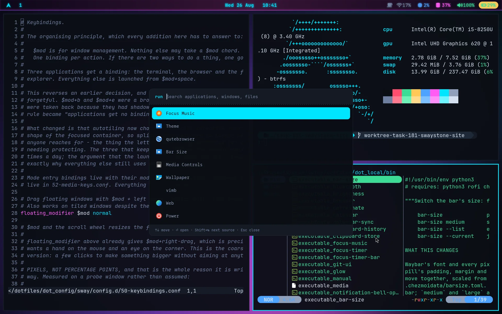

Fast because it is small. Pleasant because it was thought about.
Most lightweight desktops are lightweight instead of being nice to use.
Most nice desktops buy it with half a gigabyte of daemons you never asked for.
Swaystone is an attempt at the point in between — and a git repository that can
rebuild the whole thing from a blank disk.
Sway, three panes, the neon palette. The bar, the borders, the prompt and the terminal all take their colours from one file.
The premise
Three ideas, and the third is the one that actually does the work.
01
Light enough to disappear
There is no compositor animation to drop a frame, no desktop shell under the
window manager, and no background service that arrived as somebody else's
dependency. Sway on Wayland, session components as systemd user units,
compressed swap in RAM, and an out-of-memory handler that acts before the
machine locks up.
Idle: 550–650 MiB, effectively 0% CPU.
02
Considered enough to stay in
Small is easy. Small and pleasant is the hard part. Seventy-six bindings,
each argued for and each obeying one rule. A status bar where every module does
something when you click it. Notifications with four generated sounds. Eleven
palettes that recolour the entire desktop from a single file.
Detail is not decoration. It is why you stay.
03
Intentional, not merely empty
Minimalism is not the goal — choosing is. Every package sits on a line in
a manifest and has to justify that line. Nothing gets installed to see if it
helps and then quietly left behind. When a fix turns out not to have worked, it
comes back out, or the failure gets written down where the next reader will
look.
The question is never "is this small?" but "is this worth it?"
The numbers
Measured on the machines this is built on, and all of it checkable from the
repository.
550–650MiB idle memory
~0%idle CPU
4.5suserspace to a desktop
116declared packages
76keyboard bindings
39helper scripts
11colour themes
6scripts that check it
Idle memory is the whole graphical session — compositor, bar, notifications, idle
handling, network and audio — with no application open, on the reference VM. The
4.5 s is userspace to graphical.target on the development laptop;
firmware and bootloader are that machine's own and are not counted. Package count is
what the three manifests declare, not what pacman pulls in behind them,
and the binding count is the total checks/sway-bindings.sh reports.
The keyboard is the interface
Getting to a flow state is mostly a matter of never having to stop and think about
where something is. That takes a rule, not a long list.
$mod is for window management. Nothing else may take a $mod chord.
One binding per action — if there are two ways to do a thing, one goes.
— the comment at the top of 50-keybindings.conf
Exactly three applications get a key of their own: the terminal, the browser and the
file explorer. Everything else is one press of $modSpace away,
because the launcher costs a single extra keystroke and a crowded modifier costs you
every day.
A dozen of the seventy-six
$modSpace
Launch anything
$modReturn
Terminal
$modB
Browser
$modE
File explorer
$modG
Git interface
$modQ
Close window
$modH J K L
Move focus
$modF
Fullscreen
$modT
Split ⇄ tabbed
$mod1…0
Workspaces
CtrlTab
Tiled ⇄ floating
$mod?
Every shortcut, on screen

$modSpace searches applications, open windows and files at
once — and the desktop's own controls sit in the same list.
One palette, defined once
Sway's borders, the bar, the terminal, the launcher, notifications, the lock screen,
the prompt and the wallpaper all read the same file. Changing a colour changes every
one of them; changing the theme changes all of it at once.
These are the real palettes, read out of
.chezmoidata/themes.toml. Pick one and this page will wear it too.
No wallpaper image is stored anywhere in the repository — each one is generated on
the machine from the theme's own colours, so adding a theme costs nothing but the
colours themselves.
How it holds together
Two entry points
install.sh builds a machine from the live ISO. sync.sh applies the
repository to a machine already running it, as many times as you like.
Manifests, not snapshots
Three plain text files list what the machine should have. Anything installed and
not listed shows up as drift, in both directions.
Dotfiles as templates
chezmoi renders user configuration from the selected palette and the machine's
own identity, so one repository fits more than one machine.
Checks that argue back
Six scripts ask the running system whether it matches what the repository
intended — because the failure here is always config that looks right and does
nothing.
Install
Boot the Arch live ISO on a UEFI machine with Secure Boot off, then:
# the live ISO has no git
pacman -Sy git
git clone https://github.com/vincemaina/arch.git Arch
cd Arch
# lsblk first — this erases the disk you name
./install.sh /dev/nvme0n1
The installer asks who the machine belongs to, then partitions, installs, configures
and applies the dotfiles in five ordered stages. On a machine already running it,
./sync.sh brings it back in line and ./sync.sh --dry-run
shows what would change first.
It repartitions the disk you name. Try it in a virtual machine before you try
it on hardware you care about — that is how it is developed, and a fresh VM is the
only real test this repository has.
What this is, honestly
Swaystone is one person's machine being generalised in public. It is not a distro,
there is no installer ISO, and parts of it still assume things about the hardware it
grew up on. What it does have is a written reason for nearly every decision, a
manual for people who have never seen it, and checks that fail when the documentation
starts lying.
If that sounds like the sort of system you would want to live in, the whole thing is
in one repository.